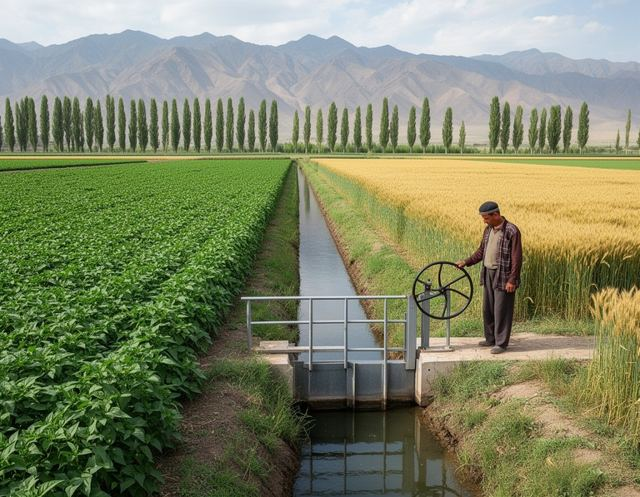

Ministry of Agriculture and Water Resources
Irad Special Economic Zone
Official web-site · Ayıl charba jana suu baylıktarı ministrligi · Министерство сельского хозяйства и водных ресурсов
Jibek Jolu Avenue 41, Talas · info@agriculture.id.gov
Monday, 2 November 2026Autumn watering by the schedule of the associations until 18 November 2026 · Vaccination of livestock is free until 30 November
Menu
Useful links
iradgov.orgGovernore-Iradprocedures
GidrometweatherStatisticsprices
CustomsServiceTenderse-Irad
ATTELKOM TOP-1000187340 |
Welcome to the official site of the Ministry of Agriculture and Water Resources The Ministry of Agriculture and Water Resources of the Irad Special Economic Zone carries out state policy in crop and livestock production, irrigation and the use of water. It directs the Talas Basin Agricultural Directorate with its State Veterinary Inspectorate, the Chu Valley Irrigation Inspectorate and the Lower Naryn Irrigation Section. About 110,000 ha are irrigated in the Talas valley and more than 80,000 ha in the lower Chu. The water of the Talas is divided with Kazakhstan; the water of the Naryn is scheduled each year under the Naryn Water and Power Protocol. Photo: a canal of the Talas valley in summer. Minister of Agriculture and Water Resources
Melis Nurmatov Minister since 2014. Agronomist; from 1999 head of the Chu office of the territorial Department of Agriculture. Leadership of the Ministry »
IrrigationWater schedules by canal, autumn watering, winter repairs
VeterinaryVaccination rounds, notices, moving animals
State supportRules 2026: seed, fertilizer, drip, laser levelling
Potato orderDraft order on imports and the comments received
News of the Ministry15.09.2026 Autumn vaccination round begins 25.08.2026 Fodder for winter: buy hay early AnnouncementsHarvest 2026. Final figures of the harvest will be published in November together with the district agriculture departments.
Dry-year water plans of large water users for 2027 are filed by 1 March 2027 (Executive Directive 2022/14).
|
Water situation
Potato imports Draft order: comment period closed 30.10.2026, 61 comments received. The decision will be announced by the Department of Public Information.Draft and register » Farm calendar: November
› autumn watering by WUA schedule › ploughing for spring crops › vaccination round to 30.11 › potatoes into the cellar at 2-4 °C › drip subsidy applications open Poll
Is the water schedule published early enough?
Reception of citizens Minister M. Nurmatov: first Wednesday of the month, 10:00-13:00, by registration, tel. +996-39-2-24-60-10. |
Best viewed at 1024×768 · Internet Explorer 7.0 and higher
Home | News | Documents | Contacts | Site mapGovernment sites: iradgov.org · Ministries · Ministry of Health · Statistics · Gidromet · Talas City Hall · Nurzhan
© Ministry of Agriculture and Water Resources of the Irad Special Economic Zone, 2010-2026. When using materials a link to the site is obligatory.
Site made on the standard template of the Department of Public Information (www.id.gov/standard). Webmaster: info@agriculture.id.gov